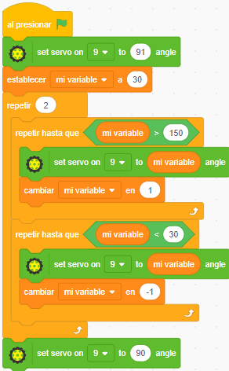
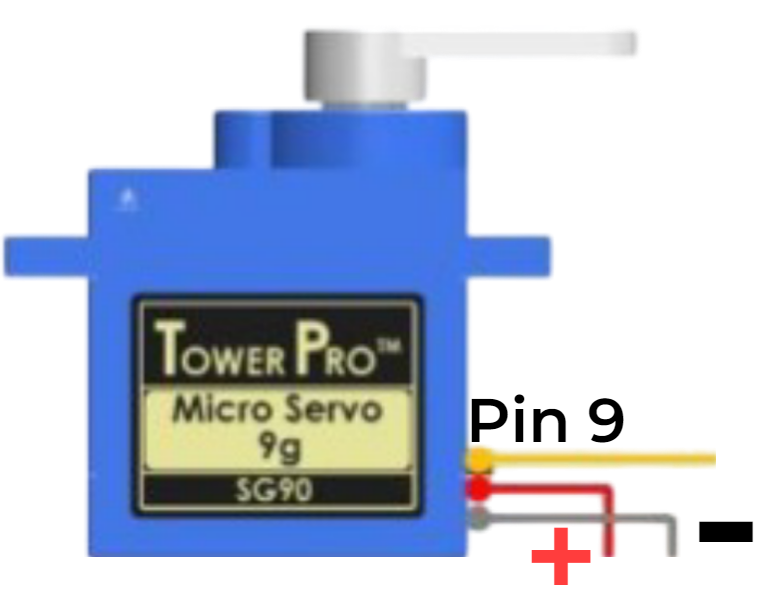

Paneo con Servo de medio giro
1°
Control del medio giro del servo
A través de un servo, sobre el cual está montado el sensor de ultrasonido, PonchoBot puede realizar un paneo a su alrededor, a los efectos de detectar obstáculos entre los 4 y los 40 cm aproximadamente.
A modo de ejemplo, se propone un programa con nuevos bloques (del tipo estructuras de control) repetir hasta que <...> y el uso de variables mi variable .
Nota: una variable en programación es un espacio en memoria que almacena valores que pueden ir cambiando (variando) durante la ejecución del programa. Se las identifica con un nombre (en nuestro caso "mi variable") y pueden ser usadas en operaciones matemáticas y lógicas (de comparación).
|
 |
Luego del bloque inicial al presionar ... tenemos el bloque que permite a Arduino saber en que pin está conectado el cable de señal del servo. En PonchoBot este cable está conectado al pin digital D9. Por eso en el bloque para manejar el servo se selecciona el pin 9 y con un giro de 90° ó 91° (es decir ubicando el sensor de ultrasonido aproximadamente mirando hacia el frente). A continuación recurrimos al uso de variables para poder almacenar valores (en este caso los ángulos que va a recorrer el servo). En la categoría Variables, Pictoblox trae ya creada mi variable y los diferentes bloques para controlar su comportamiento. Por ej. el bloque de establecer mi variable a 30 le carga a mi variable el valor inicial de 30. El bloque cambiar mi variable en 1 va aumentando su valor en 1 cada vez que se repite el ciclo repetir hasta que <...> , es decir 31, 32, 33, ... 150. No se aconseja hacer llegar el giro del servo a 180° ni a 0°; en nuestro caso se limitó a 150° y 30° (para evitar el riesgo de que al llegar a sus límites se traben los engranajes internos). En definitiva, el programa lo que hace es mover el servo (y por ende el sensor de ultrasonido) desde los 30° a los 150° y luego desde los 150° a los 30°. Esto lo hace dos veces, por eso se encierra todo en un ciclo repetir 2 |
2°
Ubicar bloques en repetir hasta que <...>
Como seleccionar y ubicar los bloques en la estructura: